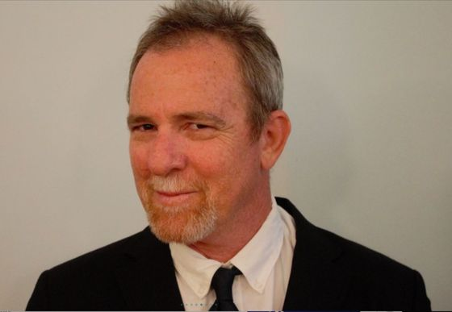
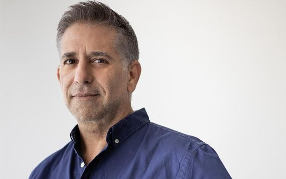
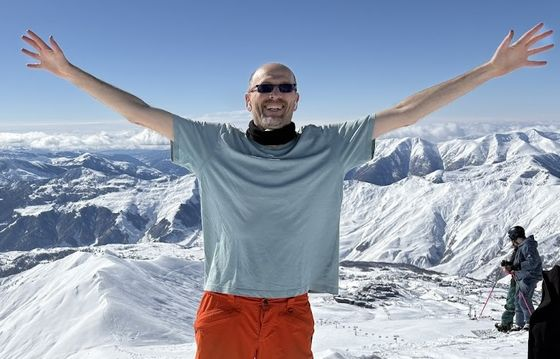

<!-- ===== FOUNDERS SECTION (SAVED / NOT DISPLAYED) ===== -->
<!-- To restore: copy the <section> block back into index.html between the Israel Crisis and Blog sections,
     and re-add the nav/footer links shown in the comments below. -->

<!-- NAV LINK (was line ~41 in index.html):
  <li><a href="#founders" data-i18n="navFounders">Founders</a></li>
-->

<!-- FOOTER LINK (was line ~836 in index.html):
  <li><a href="#founders" data-i18n="navFounders">Founders</a></li>
-->

<!-- ===== FOUNDERS ===== -->
<section id="founders" class="section section-alt">
  <div class="container">
    <div class="text-center">
      <span class="section-label" data-i18n="foundersLabel">Our Team</span>
      <h2 data-i18n="foundersH2">The Founders</h2>
      <div class="divider divider-center"></div>
    </div>
    <div class="founders-grid">

      <!-- Boaz Wachtel -->
      <div class="founder-card">
        <div class="founder-photo">
          
        </div>
        <div class="founder-body">
          <h3 data-i18n="founder1Name">Boaz Wachtel</h3>
          <span class="founder-role" data-i18n="founder1Role">Co-Founder &amp; Executive Chairman</span>
          <p data-i18n="founder1Bio">A certified clinical research manager and MA graduate of the University of Maryland, Boaz has been an ibogaine treatment provider since 1989. He co-authored the Manual for Ibogaine Therapy with Howard Lotsof, treated over 100 patients across the Netherlands, Panama, and Israel, and co-founded the Global Ibogaine Treatment Alliance. A pioneer of Israel's national medical cannabis program, Boaz has spent over three decades advocating for evidence-based psychedelic medicine in Israel and globally.</p>
          <div class="founder-links">
            <a href="https://wonderlandconference.com/sessions/the-evolution-of-ibogaine-treatment/" target="_blank" rel="noopener" class="founder-link">Wonderland Talk</a>
            <a href="https://www.linkedin.com/search/results/all/?keywords=Boaz+Wachtel+ibogaine" target="_blank" rel="noopener" class="founder-link">LinkedIn</a>
          </div>
        </div>
      </div>

      <!-- Arik Metzer -->
      <div class="founder-card">
        <div class="founder-photo">
          
        </div>
        <div class="founder-body">
          <h3 data-i18n="founder2Name">Arik Metzer</h3>
          <span class="founder-role" data-i18n="founder2Role">Co-Founder &amp; Director of Research</span>
          <p data-i18n="founder2Bio">A strategic leader with deep expertise in health sciences and biomedical innovation, Arik brings essential organizational and research leadership to the foundation. His background in life sciences, combined with a personal commitment to mental health reform in Israel, drives the foundation's scientific agenda and clinical partnerships.</p>
          <div class="founder-links">
            <a href="https://www.arikmetzer.com/en" target="_blank" rel="noopener" class="founder-link">Website</a>
            <a href="https://linkedin.com/in/arik-metzer" target="_blank" rel="noopener" class="founder-link">LinkedIn</a>
          </div>
        </div>
      </div>

      <!-- Jilly Rubenstein -->
      <!-- PHOTO: Replace <div class="founder-avatar">JR</div> with  when a photo is available -->
      <div class="founder-card">
        <div class="founder-photo">
          <div class="founder-avatar">JR</div>
        </div>
        <div class="founder-body">
          <h3 data-i18n="founder3Name">Jilly Rubenstein</h3>
          <span class="founder-role" data-i18n="founder3Role">Co-Founder &amp; Director of Community Outreach</span>
          <p data-i18n="founder3Bio">Jilly is a dedicated advocate for psychedelic-assisted therapies and mental health access in Israel. With extensive experience in community health education and outreach, she connects the foundation's mission to the families, soldiers, and survivors most in need. Her compassionate leadership ensures that the human story remains at the heart of everything the foundation does.</p>
        </div>
      </div>

      <!-- Ryan Heitner -->
      <div class="founder-card">
        <div class="founder-photo">
          
        </div>
        <div class="founder-body">
          <h3 data-i18n="founder4Name">Ryan Heitner</h3>
          <span class="founder-role" data-i18n="founder4Role">Co-Founder &amp; Director of Technology</span>
          <p data-i18n="founder4Bio">Ryan Heitner is a technology professional and founder focused on advancing access to ibogaine treatment for PTSD. His commitment to this work is rooted in a longstanding interest in psychedelic healing, meditation, and consciousness, as well as a strong desire to support people affected by trauma. With a background in technology and a family connection to healthcare, he brings a thoughtful, mission-driven approach to building compassionate new models of care.</p>
        </div>
      </div>

    </div>
  </div>
</section>
